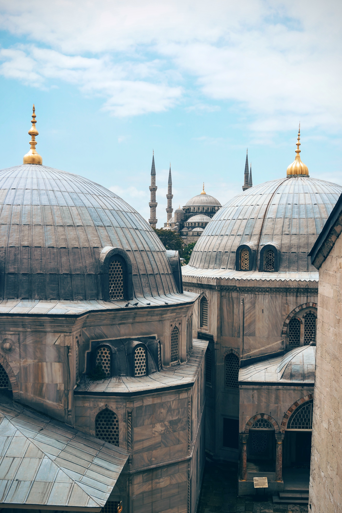

My favouritre travel destination
 |
EcuadorEcuador is a country straddling the equator on South America’s west coast. Its diverse landscape encompasses Amazon jungle, Andean highlands and the wildlife-rich Galápagos Islands. |
|  |
TurkeyTurkey is a nation straddling eastern Europe and western Asia with cultural connections to ancient Greek, Persian, Roman, Byzantine and Ottoman empires. Cosmopolitan Istanbul, on the Bosphorus Strait, is home to the iconic Hagia Sophia, with its soaring dome and Christian mosaics, the massive 17th-century Blue Mosque and the circa-1460 Topkapı Palace, former home of sultans. Ankara is Turkey’s modern capital. |
 |
ChinaChina is a populous nation in East Asia whose vast landscape encompasses grassland, desert, mountains, lakes, rivers and more than 14,000km of coastline. Capital Beijing mixes modern architecture with historic sites such as the Forbidden City palace complex and Tiananmen Square. |